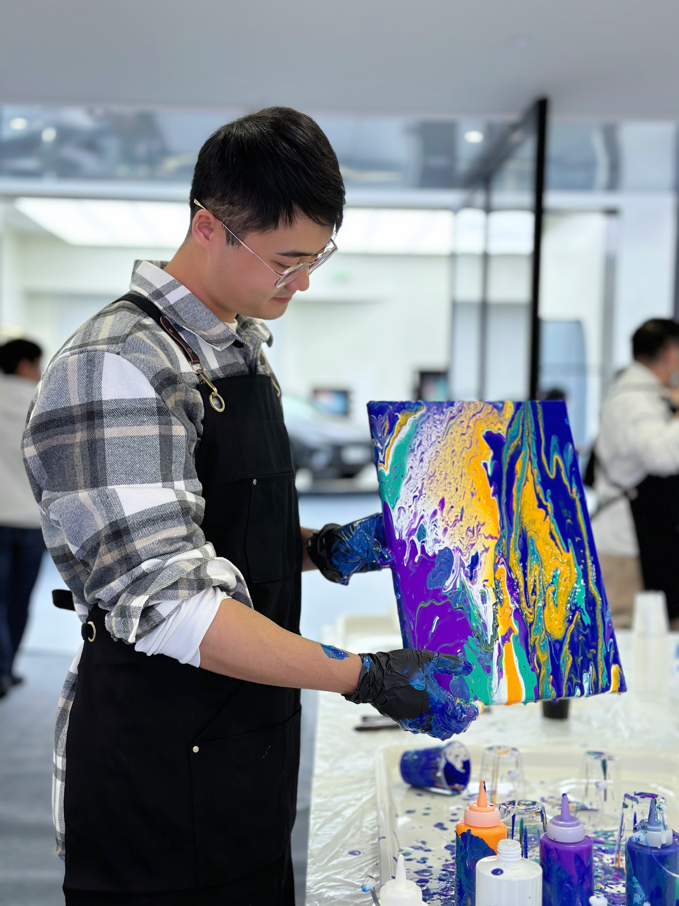

I'm a PhD candidate at the School of Design and Architecture, Swinburne University of Technology (Melbourne), supervised by Professor Sonja Pedell.
My research focuses on participatory design with older adults in residential aged care — exploring crafting, gardening, and outdoor ecological discovery as pathways to wellbeing and connection.

My work sits at the intersection of participatory design, human-AI interaction, and design education.
Hand-drawn maps, character design (人设), botanical and nature illustration, and editorial work. I also run mobile drawing lessons in Melbourne.
More on 小红书 Xiaohongshu →
Open to research collaborations, peer review invitations, illustration commissions, and drawing lesson enquiries in Melbourne.
Supervised by Prof. Sonja Pedell · Working with Prof. Leon Sterling & Dr. Diego Munoz Saez · Supported by ARC full scholarship